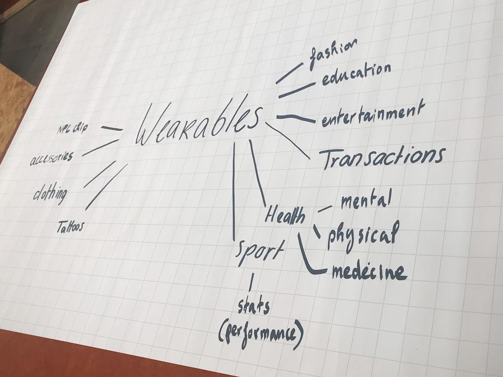
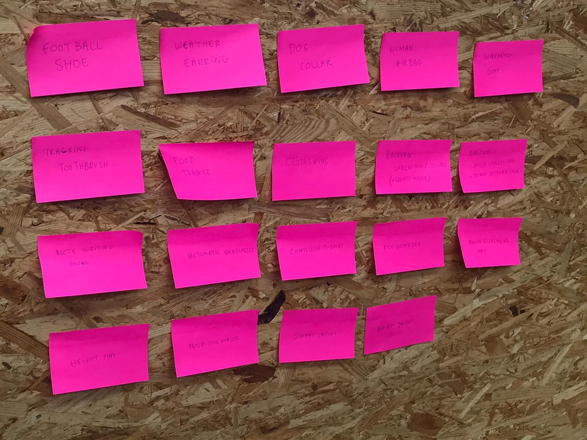
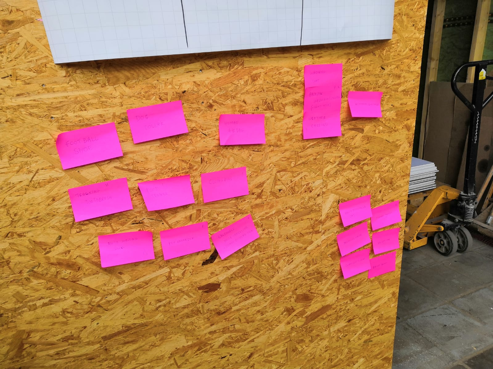
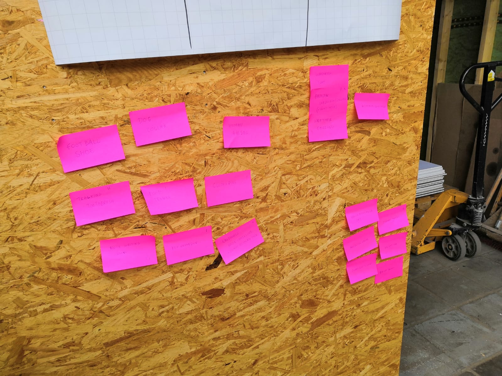
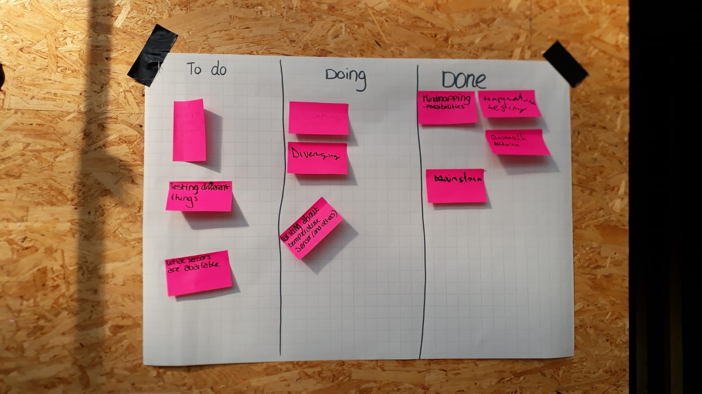
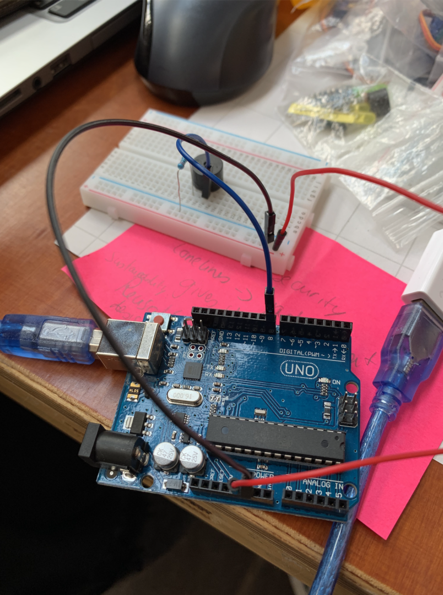
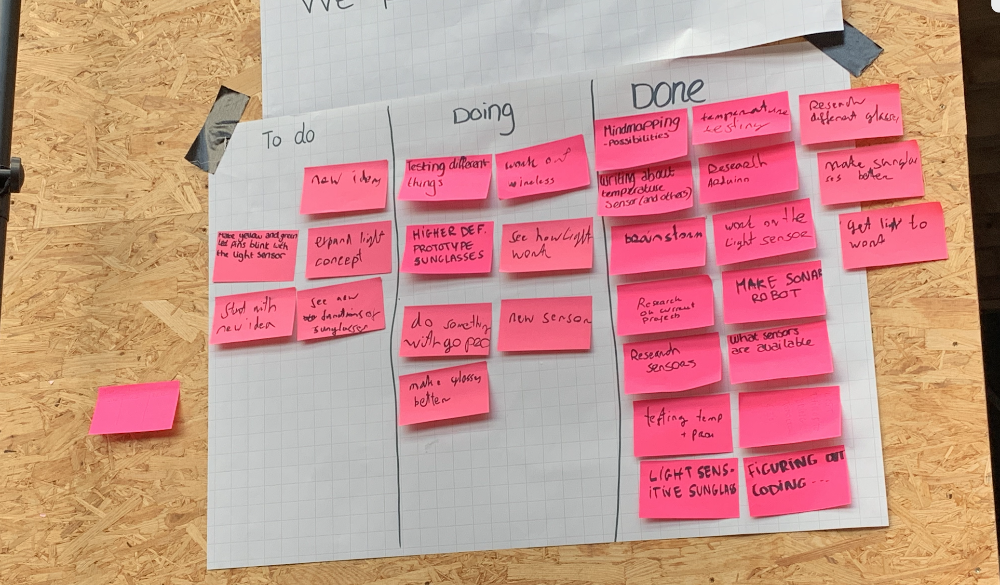
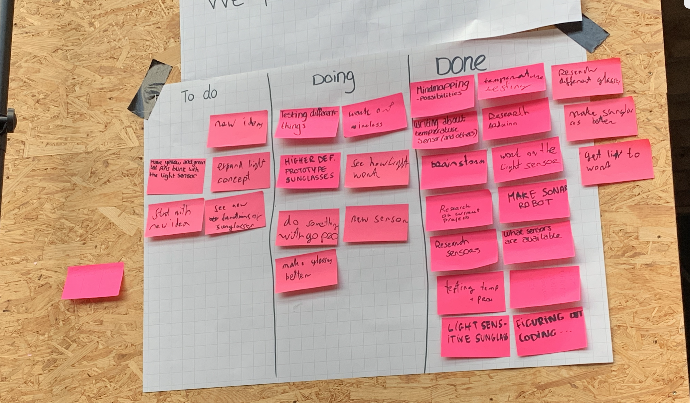
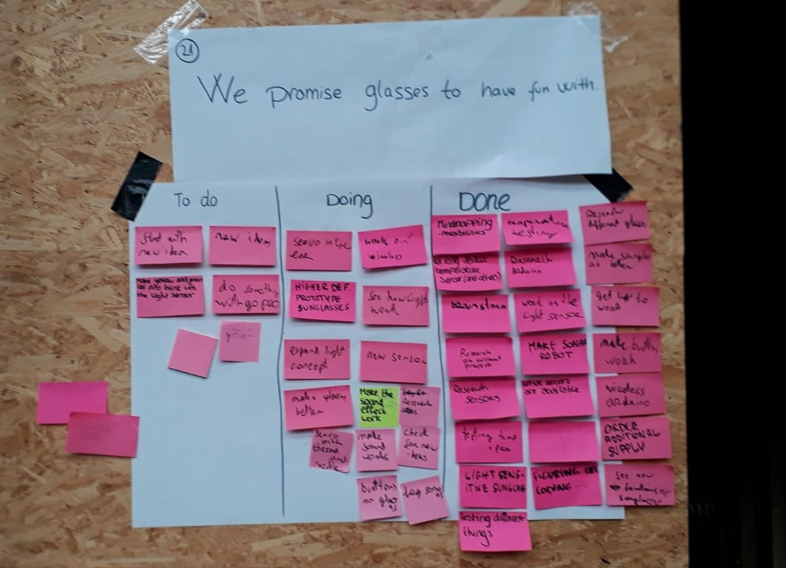
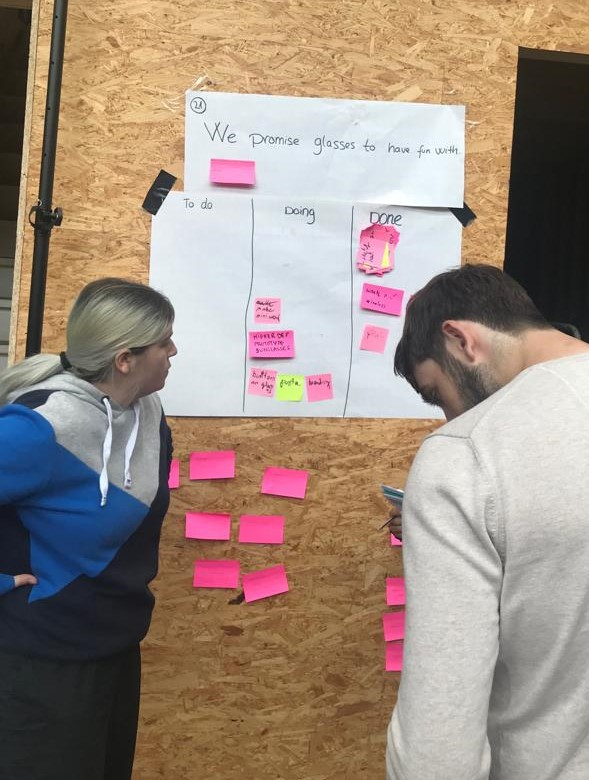

Lab Weeks process
In de weken 7 en 8 hebben ik, Kimberly, Mercedes, Mélina en Rick gewerkt aan een project voor de expositie op 14 juni. Ons onderwerp was Wearables.
Dag 1 Ma
Op de eerste dag zijn we na de introductie begonnen met het maken van een to do list volgens de scrum methode. Hierna zijn we gaan brainstormen over wat voor soorten wearables er zijn. Hierbij hebben we gebruik gemaakt van een mindmap, waarop we allerlei functies en associaties die we hadden bij het onderwerp schreven. Deze vulden we verder aan met wat voorbeelden die opkwamen tijdens het onderzoek met post-its. We konden zo doelgerichter ideeën bedenken voor eventuele functies.

Na het gezamenlijke brainstormen ging iedereen zelfstandig aan de slag met het nadenken over concepten om later voor te leggen. we zijn hierbij onder meer uitgegaan van alledaagse problemen i.p.v. alleen naar voorbeelden te kijken zoals Joel Plas ons aanraadde. Ik had hiervoor twee concepten uiteindelijk: Een rugzak en oortjes. Hieronder staan de ideeën voor deze alledaagse voorwerpen kort samengevat.
Concept 1 wearable: Rugzak
-Wordt koeler wanneer de sensors aanvoelen dat je rug warm wordt tijdens het dragen in heet weer.
-Kan spullen koel houden vanbinnen, maar is ook geïsoleerd voor koud weer.
-Kan het aantal genomen stappen en gebruikers hartslag monitoren en bijhouden. Kan verbinding maken met een mobiel om statistieken hiervan te geven.
-Kan licht geven voor wanneer de gebruiker iets wil pakken in het donker (bijv. tijdens kamperen of het zoeken van sleutels voor de deur).
Concept 2 wearable: Oortjes
-Heeft een display aan de zijkanten waarop de gebruiker een niet storen teken of emoticon kan tonen. (kan ook verschillende patronen zijn naar smaak van de gebruiker)
-Als het een hoop geluid oppikt kunnen de oortjes dit geluid opheffen met verschillende soorten white noise.
We legden deze concepten daarna bij elkaar en deelden deze op in categorieën. Daarna zijn we gaan stemmen op welke drie concepten we ons gaan richten.

 
Hierboven staan de concepten opgedeeld in categorieën. Uit deze concepten besloten we ons te richten op het rugzak concept, de weer oorbel en automatische zonnebril. Ik heb onder meer gekeken naar light sensoren die reageren op t donker voor het rugzak concept en ventilators die reageren op warmte. Ik besloot om de licht sensor uit te proberen met een ldr sensor. Tijdens het werken bleven we de to do list bijwerken voor de volgende dag.

Hierboven staan de concepten opgedeeld in categorieën. Uit deze concepten besloten we ons te richten op het rugzak concept, de weer oorbel en automatische zonnebril. Ik heb onder meer gekeken naar light sensoren die reageren op t donker voor het rugzak concept en ventilators die reageren op warmte. Ik besloot om de licht sensor uit te proberen met een ldr sensor. Tijdens het werken bleven we de to do list bijwerken voor de volgende dag.
Dag 2 Di
Tim heeft ons in de ochtend Scrum uitgelegd nadat wij de taken op ons bord iets te vaag hadden opgeschreven de vorige dag. We hebben toen een scrum meeting gedaan waarbij iedereen opsomde wat zij hadden gedaan de vorige dag en wat we gingen toen qua taken vandaag i.p.v. bijvoorbeeld iets breeds als ‘concepting’ op te schrijven.
Ik ben vandaag verder gegaan met de licht sensor. Het duurde even voordat het werkte maar na het uitproberen van een aantal dingen lukte het, hieronder zie je een demonstratie hiervan. Hierna ben ik gaan kijken naar andere sensoren waaraan gewerkt zou kunnen worden voor de concepten.
Tussendoor hielden we het scrum bord redelijk goed bij dus dat hielp met taken vinden. De ventilators waren al opgepikt door een groepsgenoot dus ik besloot om verder te gaan met het weer oorbel concept. Voor dit concept door Melina bedacht was het de bedoeling dat de oorbellen op het weer zouden reageren met licht en warmte. De ventilators zouden moeten aangaan wanneer het warm wordt en het licht wanneer het donker wordt. Ik had al dezelfde functie voor mijn rugzak concept uitgetest maar we moesten dit keer kijken hoe we dit zo klein mogelijk konden doen met zo min mogelijk arduino draadjes etc voor de oorbellen. Er was weinig tijd over dus ik had voornamelijk onderzoek gedaan naar manieren die hiermee zouden kunnen helpen voor de volgende dag. Aan het eind van de dag hebben we het Scrum bord voor de laatste keer bijgewerkt.


Dag 3 Wo
We begonnen vandaag weer met een korte startup zoals Tim had laten zien. Ik ben verder gegaan met leds voor het oorbelconcept. Ik probeerde met Kim om een led lichtje te laten werken als licht sensor zelf om het gebruik van een sensor etc overbodig te maken. Dit lukte, maar al snel kwamen we erachter dat het minder gevoelig was en realiseerden we ons dat het dingen niet makkelijker zou maken aangezien we twee verschillende leds wouden kunnen aanzetten. We probeerden dit alsnog te bereiken maar het tweede led lichtje kregen we niet aan de praat met deze methode. Al met al het was niet effectief genoeg. We probeerden nog wat andere dingen maar die liepen op niks uit.
Ondertussen hadden Melina en Rick een papieren prototype gemaakt met de dynamo voor het zonnebril concept zoals je hieronder kan zien.
We kregen ergens in de middag een gastspreker langs over robots wat een best leuke onderbreking was na de tegenslagen met de leds.
Later op de dag zijn we samen draad gaan halen voor het bril concept, van alle concepten lijkt deze toch het beste te gaan. Ik hielp daarom mee om het concept iets concreter te maken met een ‘blauwdruk’ van hoe we ons voorstelden hoe t eruit zou zien ongeveer compleet. Op dit punt dachten we aan iets met een springveer en de dynamo om de lenzen omhoog te krijgen.


Dag 4 Do
Na de 15 minuten standup zijn we als een groep gaan overleggen op welk concept we ons zullen gaan richten. Op dit punt is er al veel vooruitgang geboekt met het zonnebril concept dus we besloten unaniem om ons hierop te gaan focussen. We zijn hierna gaan nadenken over de functies die we hieraan zouden kunnen toevoegen. Tijdens het brainstormen kwamen we met nieuwe ideeën naast de functionaliteiten die we al hadden (lenzen die omhoog en omlaag gaan, automatisch en handmatig) voor geluid of lichtjes om toe te voegen.
We kregen vandaag nog een inspirerend gastcollege tussendoor, dit keer over Artificial creatures. Een van de projecten die een indruk op mij maakte was ‘Buqs’, een soort autonome elektronische levensvormen die verspreid zijn door verschillende steden. Ik vond het interessant hoe deze ‘wezens’ zelfstandig communicatie maakten met elkaar en hun omgeving. Ik heb wel voor Wearables gekozen maar dit was heel interessant om te volgen.
Ik ben hierna verder gegaan met het uitproberen van de geluid sensor. We wisten niet wat voor geluid we zouden wilden dus ik experimenteerde een beetje met noten. Ik probeerde verschillende combinaties om de noten van hoog naar laag en andersom zo vlekkeloos te laten verlopen, maar het klonk uiteindelijk nog steeds iets te veel als pieptonen. Tot slot hebben we nog wat nagedacht over mogelijke materialen voor de bril om binnenkort te bestellen/halen.

 

Dag 5 Vrij
Na de standup en het aanpassen van het scrum bord ben ik verder gegaan met nummers uitproberen samen met Kimberly. Online kon ik wat voorbeelden vinden maar wat ik ook probeerde de kwaliteit werd er niet beter op dus het bleef klinken als geluidjes na elkaar i.p.v. een nummer zonder heel korte onderbrekingen. We besloten uiteindelijk dat we geluid zouden schrappen voor de bril aangezien we al genoeg functies hadden.
We besloten vandaag wat onze promise voor het project zou worden. Deze hebben we daarna opgeschreven op een blad en boven het scrum bord gehangen. Onze promise is uiteindelijk geworden “We promise glasses to have fun with”, omdat we willen dat gebruikers vooral plezier hebben bij het dragen van onze bril.

Dag 6 Ma
Vanwege Pinkstermaandag (10 juni) hadden we geen labdag.
Dag 7 Di
Tijdens de ochtend standup hebben we besproken wat we afgelopen vrijdag hadden gedaan en waar we aan zouden beginnen vandaag.
Er zal ten eerste gewerkt worden aan het ontwikkelen van een app i.p.v. buttons waarmee de bril bediend zou kunnen worden. Je ziet hieronder een test met de buttons op de 'app' en lichtjes. Daarnaast zou er worden begonnen aan wat branding zoals een poster voor de expo en een naam nu we een definitief concept hebben dat we gaan ontwikkelen. Verder zou ik wat blauwdruk schetsen van hoe de bril gaat werken maken (ook hieronder te zien) en samen hebben we de requirements opgesteld.
Ik heb aan de hand van een ruwe schets van Rick en feedback van de groep de blauwdruk kunnen uitwerken. Voor de blauwdruk heb ik een zijaanzicht van de bril geschetst die weergeeft hoe de lenzen omhoog en omlaag gegaan, in ‘gespannen’ en ‘ontspannen’ stand.


Dag 8 Woe
Vandaag is er voornamelijk aan de promo gewerkt en het perfectioneren van de bril in samenwerking met de applicatie. Er werd aan het logo en de poster gewerkt aan de ene kant en de andere testte de bril. We hebben officieel besloten om ons project 'Briliant' te noemen, als een klein woordgrapje op bril en brilliant.
Om de arduino, breadboard etc bijeen te houden heb ik een tasje genaaid voor de bezoekers zodat hier geen problemen mee ontstaan. Aan het eind van de dag lukte het om de lenzen omhoog en omlaag te laten gaan met de app. Net als de lampjes gaat dit d.m.v. de mini Arduino en WiFi.


Dag 9 Do
We hebben flink doorgewerkt de afgelopen dagen dus na het testen van de bril konden we alvast nadenken over de opstelling voor morgen. De LED lampjes zijn aan de bril vastgemaakt en ze kunnen aan en uit met de app, net als de lenzen. De sensor reageert ook op donker en licht om de lenzen automatisch op en neer te laten gaan. Hieronder zie je Mercedes de bril uittesten. Voor de opstelling besloten we dat we het zonlicht moeten zien te blokkeren morgen, dus we zouden dekens meebrengen om op te hangen.
Dag 10 Vrij
Dit is de laatste dag van het project en ook de dag van de expositie. In de ochtend zijn we daarom druk bezig geweest met onze setup. Door het glazen dak kwam er licht van boven dus we probeerden met een soort zeil schaduw te creëren, zodat de licht sensor van de bril beter zou werken.
Dit werkte niet, dus we besloten om de het simpel te houden met een lamp (zodat de glazen naar beneden zouden gaan d.m.v de sensor) en een spiegel. Om schaduw na te bootsen besloten we om de sensor te bedekken met een vinger. Hieronder zie je onze eerste opzet poging met het laken en de lamp die we bij onze uiteindelijke opzet hadden.


Hieronder staat de aftermovie die is gemaakt van de labweken!